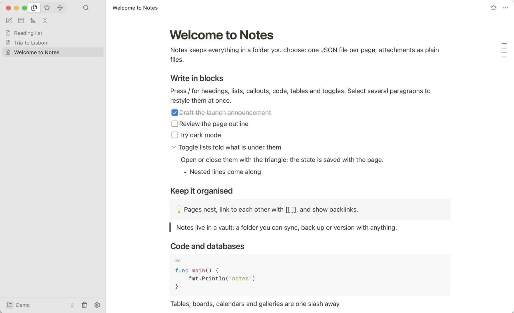
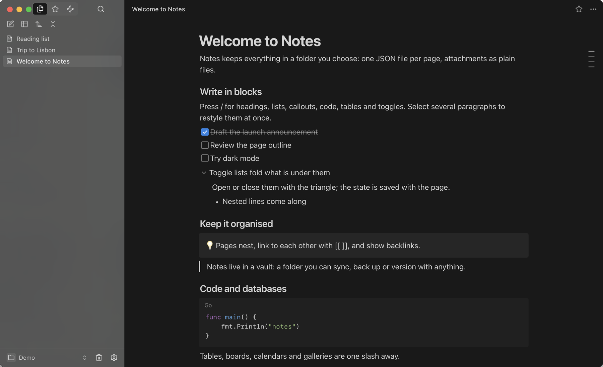

A local Notion. Free, light and fast. 本地 Notion，完全免费，轻快流畅。
A completely free desktop notes app with the blocks, nested pages and databases you know, small and quick to start. Your notes stay as plain files in a folder you own: no account, no lock-in. 完全免费的桌面笔记软件：熟悉的块编辑、嵌套页面和数据库，体积小、启动快。笔记以普通文件保存在你自己的文件夹里，无需账号，不被锁定。
Windows Your device你的设备
Installer for Windows 10 and later适用于 Windows 10 及更高版本的安装程序
Linux Your device你的设备
Debian and Ubuntu, or any distributionDebian、Ubuntu，或任意发行版


Blocks, everywhere处处是块
Type / for headings, to-dos, toggles, callouts, code, tables. Restyle many paragraphs at once.输入 / 插入标题、待办、折叠列表、提示框、代码和表格；多选段落可一次改样式。
Plain files普通文件
One JSON file per page in a folder you pick. No account, no lock-in.每个页面一个 JSON 文件，放在你选的文件夹里。无需账号，不被锁定。
Pages in pages页面套页面
Nested pages, links, backlinks, a graph, and databases as tables, boards and calendars.嵌套页面、链接与反向链接、关系图，以及表格、看板、日历视图的数据库。
History and sync历史与同步
Every page keeps its recent versions. Sync with a WebDAV or SMB folder.每个页面保留近期版本，可与 WebDAV 或 SMB 文件夹同步。
Light and dark浅色与深色
Follows your system, with a translucent sidebar on macOS. English and 简体中文.跟随系统，macOS 上带半透明侧边栏。支持 English 与简体中文。
Small and fast小而快
One small binary written in Go, using your system's own web view.Go 编写的单个小体积程序，使用系统自带的网页视图。